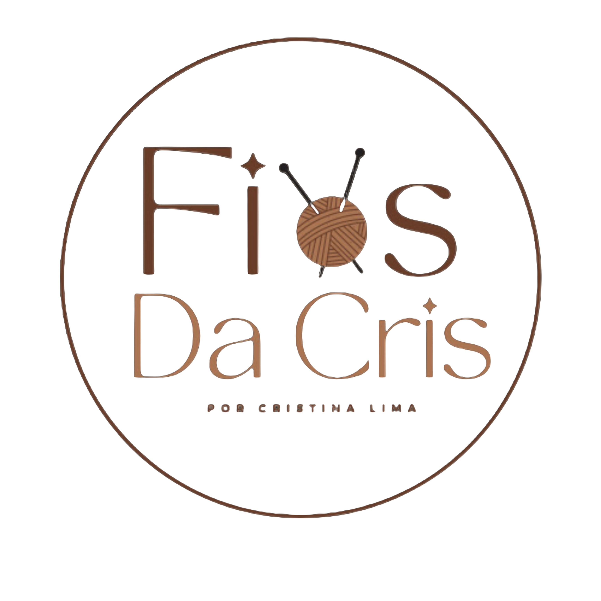

Faça sua encomenda
O ateliê "Fios da Cris" é um espaço encantador e acolhedor, dedicado à arte do crochê e à criatividade
manual. Localizado em um ambiente tranquilo e inspirador, o ateliê é um refúgio para aqueles que amam usar
peças únicas e artesanais.

© 2024 Fiosdacris, Inc.